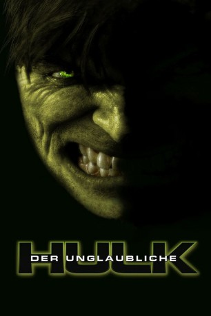

gesehen am 29.03.2015
gesehen am 29.03.2015Alternativ: The Incredible Hulk gesehen am 29.03.2015
 
 IMDB-Wertung: 6.8 / 10
IMDB-Wertung: 6.8 / 10  Metascore:
Metascore: 
Nachdem er bei einem biochemischen Experiment so stark verstrahlt wurde, dass er sich, wann immer er gereizt oder wütend wird, in das grüne Monstrum Hulk verwandelt, lebt der Wissenschaftler Bruce Banner ein zurückgezogenes Leben im brasilianischen Exil. Dorthin hat es ihn auf der Flucht vor dem Militärgeneral Ross verschlagen, der alles unternimmt, um den ehemaligen Freund seiner Tochter Betty für seine Zwecke zu missbrauchen. Während sich für Banner die Uhr rückwärts dreht, er nach einem Gegenmittel für die Mutation forscht und seine Wut unter Kontrolle zu bringen versucht, unterläuft ihm ein Missgeschick: General Ross gelingt es, Banner ausfindig zu machen. Auf der Flucht vor dem Militär und dem ehrgeizigen Soldaten Blonsky sucht er Zuflucht bei Betty, die ihm dabei hilft, die unfreiwilligen Superkräfte zu kontrollieren. Blonsky hat sich Banners einstige Formel zueigen gemacht und ist zur Kampfbestie Abomination mutiert.
Jahr: 2008
Dauer: 112 Minuten
FSK: 16
Land: USA Studio: Universal PicturesTonspuren: DTS-HD - ,
Untertitel: Deutsch,
Auflösung: 1080p (1920x1080) Größe: 18432 MB
Genre: Action, Abenteuer, Sci-Fi
Regisseur: Louis Leterrier
Drehbuch: Zak Penn, Zak Penn, Stan Lee, Jack Kirby
Soundtrack: Craig Armstrong
Darsteller:
 Edward Norton als Bruce Banner
Edward Norton als Bruce Banner Liv Tyler als Betty Ross
Liv Tyler als Betty Ross Tim Roth als Emil Blonsky
Tim Roth als Emil Blonsky William Hurt als General 'Thunderbolt' Ross
William Hurt als General 'Thunderbolt' Ross Tim Blake Nelson als Samuel Sterns
Tim Blake Nelson als Samuel Sterns Ty Burrell als Leonard
Ty Burrell als Leonard Christina Cabot als Major Kathleen Sparr
Christina Cabot als Major Kathleen Sparr Peter Mensah als General Joe Greller
Peter Mensah als General Joe Greller Lou Ferrigno als Security Guard / The Incredible Hulk
Lou Ferrigno als Security Guard / The Incredible Hulk Greg Bryk als Commando
Greg Bryk als Commando Chris Owens als Commando
Chris Owens als Commando Nick Alachiotis als Tough Guy
Nick Alachiotis als Tough Guy Joris Jarsky als Soldier
Joris Jarsky als Soldier Arnold Pinnock als Soldier
Arnold Pinnock als Soldier Tig Fong als Cop
Tig Fong als Cop Wayne Robson als Boat Captain
Wayne Robson als Boat Captain Martin Starr als Computer Nerd
Martin Starr als Computer Nerd Michael Kenneth Williams als Harlem Bystander
Michael Kenneth Williams als Harlem Bystander Genelle Williams als Terrified Gal
Genelle Williams als Terrified Gal Tony Nappo als Brave Cop
Tony Nappo als Brave Cop Robert Downey Jr. als Tony Stark , uncredited
Robert Downey Jr. als Tony Stark , uncredited Stan Lee als Milwaukee Man Drinking From Bottle , uncredited
Stan Lee als Milwaukee Man Drinking From Bottle , uncredited Ishan Morris als Student , uncredited
Ishan Morris als Student , uncredited Imali Perera als Female Faculty Member , uncredited
Imali Perera als Female Faculty Member , uncreditedDatei: X:\Comic-Filme\Hulk\Unglaubliche Hulk, Der (2008, FSK16, 1920x1080).mkv seit 16.03.2015
Festplatte: Comicverfilmungen+MusikCD
 Alle Filme aus Gruppe 'Comic-Filme\Hulk'
Alle Filme aus Gruppe 'Comic-Filme\Hulk'